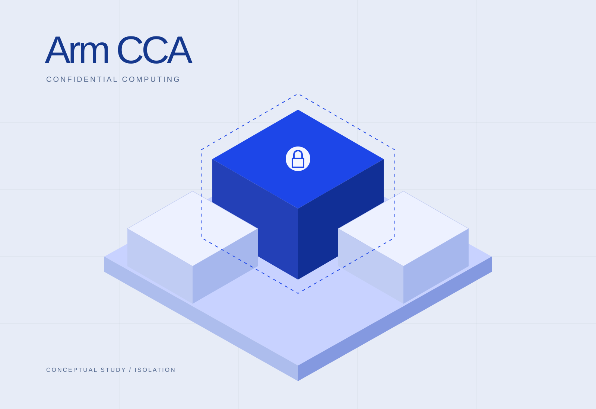

Confidential vECUs with Arm CCA
Automotive virtual ECU research using Zephyr OS and Arm CCA.

Problem
Automotive virtual ECU research requires integrating operating systems and isolation mechanisms that were not designed as a single stack. Zephyr OS and Arm CCA presented compatibility gaps.
Approach
Use a custom shim layer to bridge integration incompatibilities in an automotive vECU research platform for mixed-criticality workloads.
Contribution
Developed the vECU research platform and addressed Zephyr OS–Arm CCA integration through a custom shim layer.
Results
An automotive vECU research platform supporting the ongoing systems-security investigation.
Scope & limitations
Ongoing research; detailed security and performance evaluation is outside this public overview.